原文连接:https://www.cnblogs.com/kaspar/p/11496712.html
工欲善其事，必先利其器。工具做好调整可以让我们事半功倍。
以下设置均在window-->preferences中
1、首先修改工作空间字符集为UTF-8
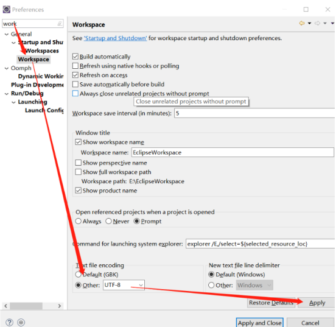
2、修改字体大小
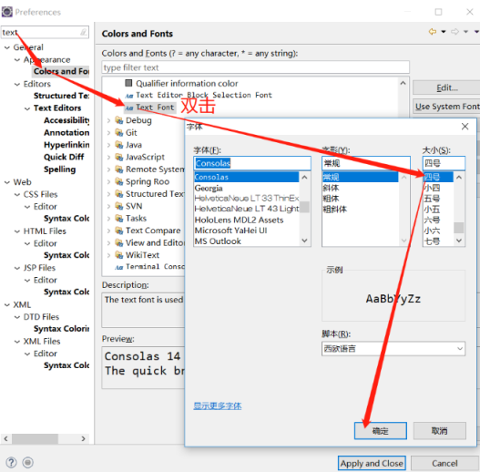
3、修改Java代码提示
Java的自动提示功能默认只有“.”才会提示，修改之后任何字母均会自动提示类似idea
Auto activation triggers for Java:中原来的“.”保留，再额外增加26个英文字母的大小写，
修改之后为
.qwertyuiopasdfghjklzxcvbnmQWERTYUIOPASDFGHJKLZXCVBNM
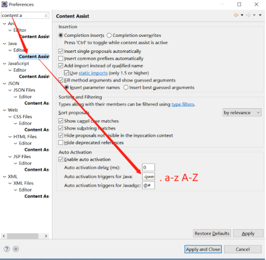
4、修改javascript提示
.abcdefghijklmnopqrstuvwxyzABCDEFGHIJKLMNOPQRSTUVW
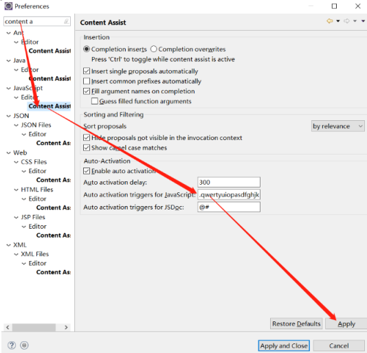
5、修改json中代码提示
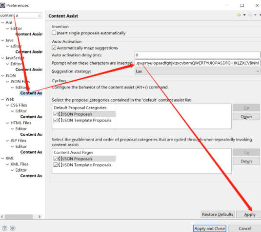
6、修改HTML中代码的提示
<=.abcdefghijklmnopqrstuvwxyzABCDEFGHIJKLMNOPQRSTUVW
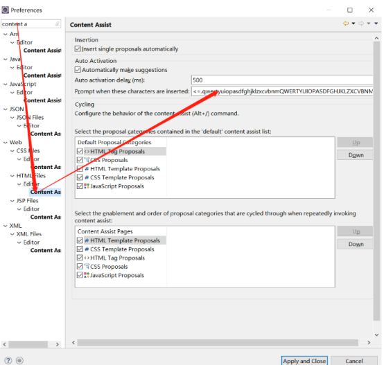
7、修改XML中的代码提示
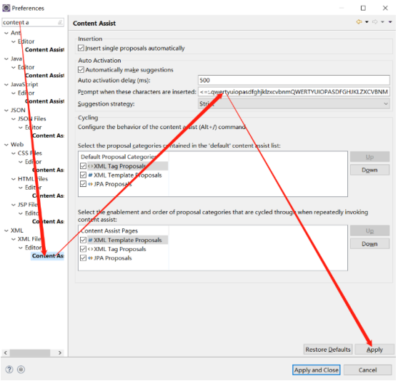
8、修改常用的private和public的提示
修改之后为pri提示为private （带空格）pub提示为public （带空格），红框内为修改内容，可根据个人习惯更改
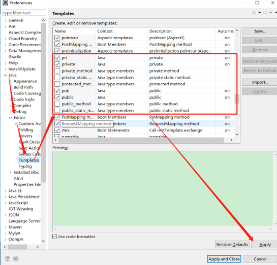
9、提示太多而且都不正确，去掉
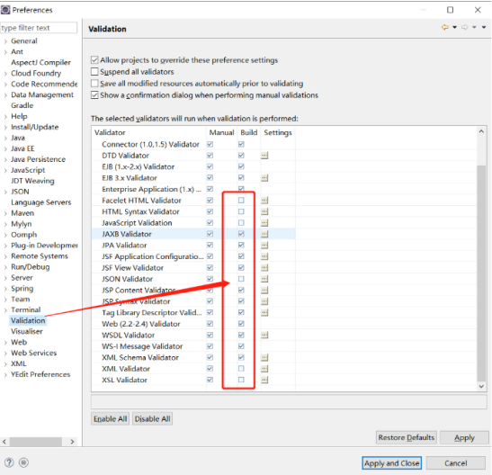
10、配置maven仓库
1）添加Maven
2）修改仓库位置（需要更改配置仓库文件setting）
注意：Windows下maven默认设置文件位置为：C:\Users\Lenovo(用户)\.m2\settings.xml,建议把maven的配置文件settings.xml放在这里，打开eclipse就会使配置文件中的仓库地址。这里为了保险，还是修改了配置文件的路径。
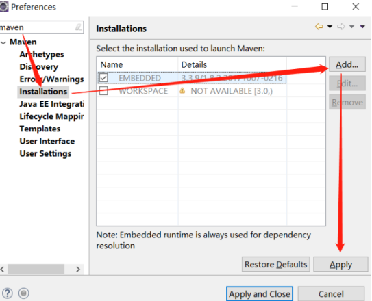

11、修改背景颜色为护眼豆沙色
有些人喜欢暗色调的背景，根据自己的喜好调整。
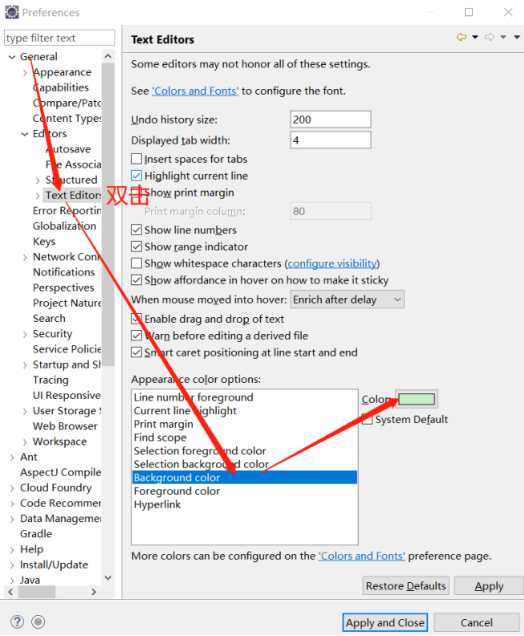
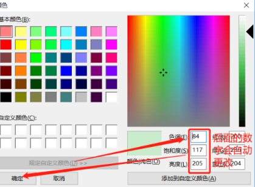
12、视图建议,设置在: window-show View.可以选择Other搜索,图中红色框标记出来的强烈建议显示出来
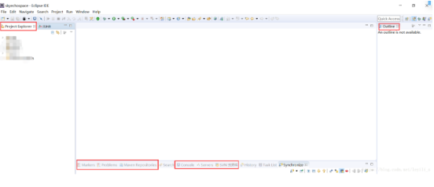
13、设置注释模板
以下是比较喜欢的模板：
/**
* @author ${user}
* @Date ${currentDate:date('yyyy-MM-dd HH:mm:ss')}
* @Description
* ${tags}
*/
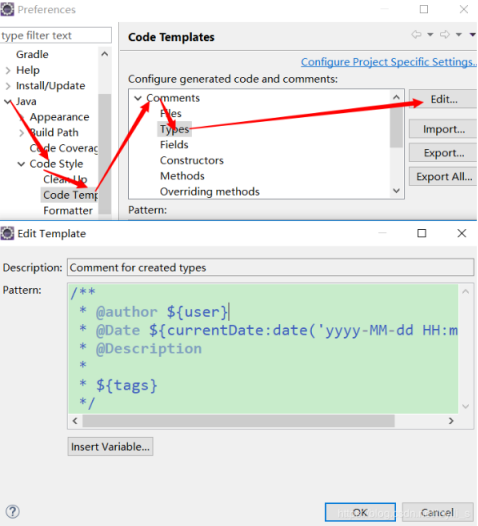
14、SVN及Git设置忽略
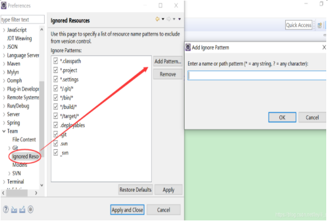
以上这些都可以按照个人喜好去选择配置。